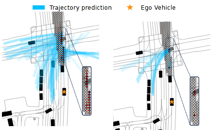
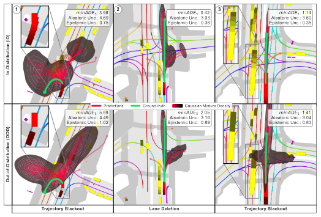
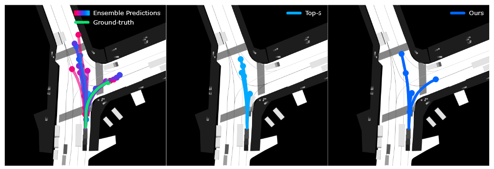
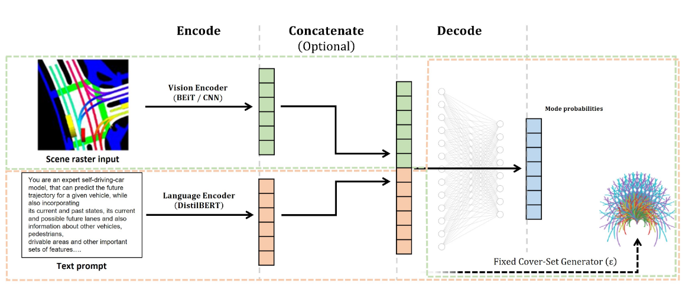

About
I am a Professor for Autonomous Systems at Coburg University of Applied Sciences.
My work sits at the intersection of Artificial Intelligence and Robotics, with a dedicated
focus on bridging the gap between theoretical research and real-world deployment.
Before joining HS Coburg, I was a Research Scientist at the Bosch Center for Artificial Intelligence (BCAI),
where I worked on bringing advanced AI methods to automotive systems.
My goal is to develop robust, interpretable algorithms that can navigate the complexities
of the physical world safely.
Interests
Autonomous Driving
Prediction & Motion Planning
Uncertainty Modeling
Bayesian Deep Learning
Reinforcement Learning
End-to-End (E2E) Model
Robotics
Real-World Deployment
Selected Publications

Don’t double it: Efficient Agent Prediction in Occlusions
A. Rothenhäusler, M. Mazzola, A. Look, R. Rajan, J. Bödecker
Preprint 2026

Stochasticity in Motion: An Information-Theoretic Approach to Trajectory Prediction
A. Distelzweig, A. Look, E. Kosman, F. Janjoš, J. Wagner, A. Valada
IROS 2025

Motion Forecasting via Model-Based Risk Minimization
A. Distelzweig, E. Kosman, A. Look, F. Janjoš, D. K. Manivannan, A. Valada
ICRA 2025

Can you text what is happening? Integrating pre-trained language encoders into trajectory prediction models
A. Keysan, A. Look, E. Kosman, G. Gürsun, J. Wagner, Y. Yao, B. Rakitsch
IROS Agents4AD Workshop